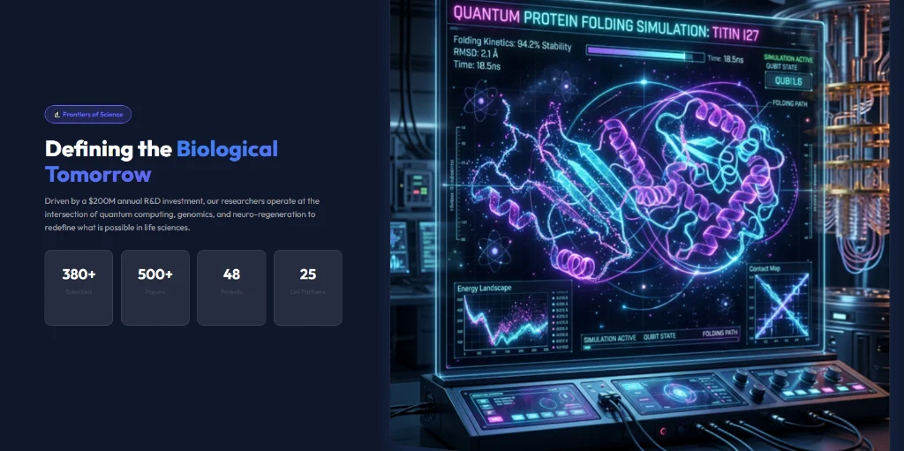
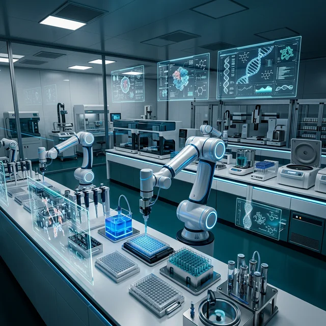
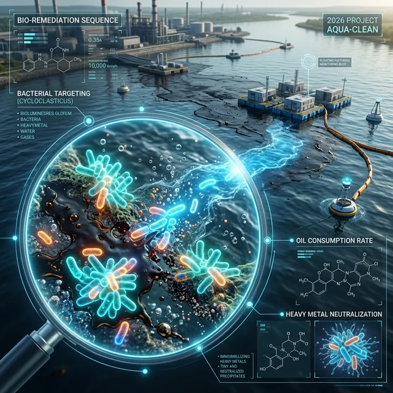
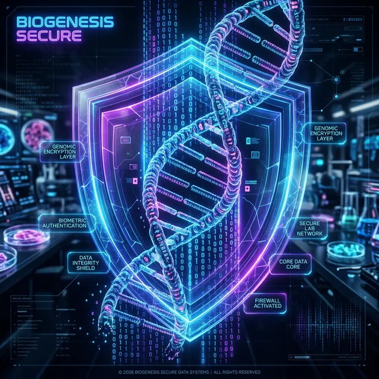
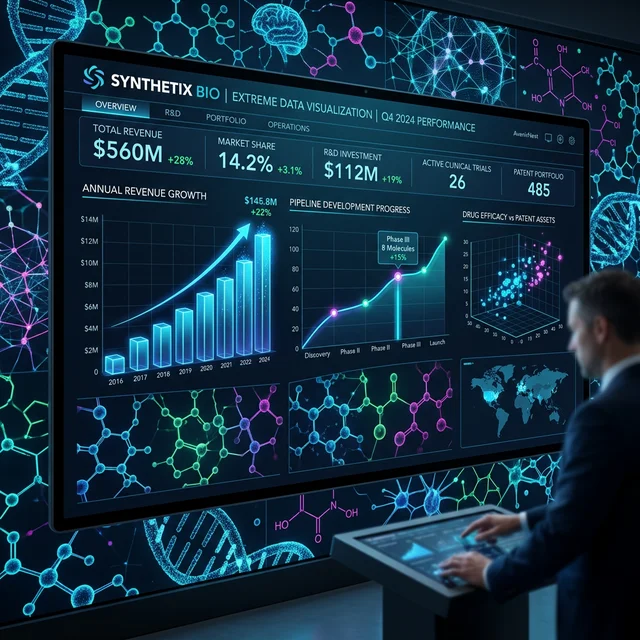

We translate complex biological research into scalable solutions for the world's most critical industries—Healthcare, Agriculture, and Commercial Production.
We build polygenic risk models that predict disease onset up to 15 years before clinical symptoms appear, integrated with hospital-grade diagnostic ecosystems.
Deploying programmable biological nanobots that traverse the bloodstream to perform cellular-level repair and targeted drug delivery.


Operating 24/7 via AI-driven robotics to identify novel bioactive compounds through high-throughput screening experiments.
Utilizing engineered microbes to neutralize toxic waste and reverse the impact of industrial pollution on soil and water tables.


Genetic data is the most sensitive information on Earth. We employ military-grade quantum encryption to ensure total sovereignty.
Distributing high-end biotech infrastructure to emerging markets, ensuring the benefits of life sciences are accessible globally.

Beyond our core sectors, we are pioneering four foundational technologies that will define the next decade of biological innovation.
We are engineering programmable genetic logic gates that allow cells to compute and react to their environment in real-time. This "cellular software" enables autonomous drug delivery systems that only activate in the presence of specific disease markers.
Leveraging transformer-based AI models, we design de-novo proteins with atomic precision. This allows for the creation of bespoke antibodies and enzymes that do not exist in nature, optimized for extreme industrial environments or rare pathologies.
Bridging the gap between silicon and carbon, our neuro-mesh technology integrates directly with peripheral nerves. These "Living Links" provide a seamless bi-directional pathway for prosthetic control and real-time neural health monitoring.
Reimagining chemical manufacturing through biology. We harness specialized microbial strains to sequester atmospheric carbon and convert it into high-value specialty chemicals, bypassing traditional energy-intensive petrochemical pathways.